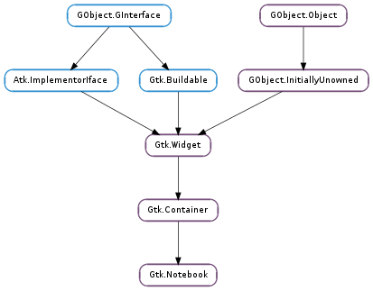

| Subclasses: | Anjuta.CommandBar, Gdl.Switcher, Gkbd.Indicator |
|---|
| Name | Type | Flags | Description |
|---|---|---|---|
| enable-popup | bool | r/w | If True, pressing the right mouse button on the notebook pops up a menu that you can use to go to a page |
| group-name | str | r/w | Group name for tab drag and drop |
| page | int | r/w | The index of the current page |
| scrollable | bool | r/w | If True, scroll arrows are added if there are too many tabs to fit |
| show-border | bool | r/w | Whether the border should be shown |
| show-tabs | bool | r/w | Whether tabs should be shown |
| tab-pos | Gtk.PositionType | r/w | Which side of the notebook holds the tabs |
| Name | Parameters | Return | Description |
|---|---|---|---|
| change-current-page | int | bool | |
| create-window | Gtk.Widget, int, int | Gtk.Notebook | The ::create-window signal is emitted when a detachable tab is dropped on the root window. A handler for this signal can create a window containing a notebook where the tab will be attached. It is also responsible for moving/resizing the window and adding the necessary properties to the notebook (e.g. the Gtk.Notebook :group-name ). |
| focus-tab | Gtk.NotebookTab | bool | |
| move-focus-out | Gtk.DirectionType | ||
| page-added | Gtk.Widget, int | the ::page-added signal is emitted in the notebook right after a page is added to the notebook. | |
| page-removed | Gtk.Widget, int | the ::page-removed signal is emitted in the notebook right after a page is removed from the notebook. | |
| page-reordered | Gtk.Widget, int | the ::page-reordered signal is emitted in the notebook right after a page has been reordered. | |
| reorder-tab | Gtk.DirectionType, bool | bool | |
| select-page | bool | bool | |
| switch-page | Gtk.Widget, int | Emitted when the user or a function changes the current page. |
| Name | Type | Access |
|---|---|---|
| container | Gtk.Container | r |
Bases: Gtk.Container
The Gtk.Notebook widget is a Gtk.Container whose children are pages that can be switched between using tab labels along one edge.
There are many configuration options for Gtk.Notebook. Among other things, you can choose on which edge the tabs appear (see Gtk.Notebook.set_tab_pos ()), whether, if there are too many tabs to fit the notebook should be made bigger or scrolling arrows added (see Gtk.Notebook.set_scrollable ()), and whether there will be a popup menu allowing the users to switch pages. (see Gtk.Notebook.popup_enable (), Gtk.Notebook.popup_disable ())
The Gtk.Notebook implementation of the Gtk.Buildable interface supports placing children into tabs by specifying “tab” as the “type” attribute of a <child> element. Note that the content of the tab must be created before the tab can be filled. A tab child can be specified without specifying a <child> type attribute.
To add a child widget in the notebooks action area, specify “action-start” or “action-end” as the “type” attribute of the <child> element.
A UI definition fragment with Gtk.Notebook
<object class="GtkNotebook">
<child>
<object class="GtkLabel" id="notebook-content">
<property name="label">Content</property>
</object>
</child>
<child type="tab">
<object class="GtkLabel" id="notebook-tab">
<property name="label">Tab</property>
</object>
</child>
</object>
| Returns: | the newly created Gtk.Notebook |
|---|---|
| Return type: | Gtk.Widget |
Creates a new Gtk.Notebook widget with no pages.
| Parameters: |
|
|---|---|
| Returns: | the index (starting from 0) of the appended page in the notebook, or -1 if function fails |
| Return type: |
Appends a page to notebook.
| Parameters: |
|
|---|---|
| Returns: | the index (starting from 0) of the appended page in the notebook, or -1 if function fails |
| Return type: |
Appends a page to notebook, specifying the widget to use as the label in the popup menu.
| Parameters: | pack_type (Gtk.PackType) – pack type of the action widget to receive |
|---|---|
| Returns: | The action widget with the given pack_type or None when this action widget has not been set |
| Return type: | Gtk.Widget |
Gets one of the action widgets. See Gtk.Notebook.set_action_widget ().
| Returns: | the index (starting from 0) of the current page in the notebook. If the notebook has no pages, then -1 will be returned. |
|---|---|
| Return type: | int |
Returns the page number of the current page.
| Returns: | the group name, or None if none is set. |
|---|---|
| Return type: | str |
Gets the current group name for notebook.
| Parameters: | child (Gtk.Widget) – a widget contained in a page of notebook |
|---|---|
| Returns: | the menu label, or None if the notebook page does not have a menu label other than the default (the tab label). |
| Return type: | Gtk.Widget |
Retrieves the menu label widget of the page containing child.
| Parameters: | child (Gtk.Widget) – the child widget of a page of the notebook. |
|---|---|
| Returns: | the text of the tab label, or None if the widget does not have a menu label other than the default menu label, or the menu label widget is not a Gtk.Label. The string is owned by the widget and must not be freed. |
| Return type: | str |
Retrieves the text of the menu label for the page containing child.
| Returns: | the number of pages in the notebook |
|---|---|
| Return type: | int |
Gets the number of pages in a notebook.
| Parameters: | page_num (int) – the index of a page in the notebook, or -1 to get the last page |
|---|---|
| Returns: | the child widget, or None if page_num is out of bounds |
| Return type: | Gtk.Widget |
Returns the child widget contained in page number page_num.
| Returns: | True if arrows for scrolling are present |
|---|---|
| Return type: | bool |
Returns whether the tab label area has arrows for scrolling. See Gtk.Notebook.set_scrollable ().
| Returns: | True if the bevel is drawn |
|---|---|
| Return type: | bool |
Returns whether a bevel will be drawn around the notebook pages. See Gtk.Notebook.set_show_border ().
| Returns: | True if the tabs are shown |
|---|---|
| Return type: | bool |
Returns whether the tabs of the notebook are shown. See Gtk.Notebook.set_show_tabs ().
| Parameters: | child (Gtk.Widget) – a child Gtk.Widget |
|---|---|
| Returns: | True if the tab is detachable. |
| Return type: | bool |
Returns whether the tab contents can be detached from notebook.
| Returns: | horizontal width of a tab border |
|---|---|
| Return type: | int |
Returns the horizontal width of a tab border.
| Parameters: | child (Gtk.Widget) – the page |
|---|---|
| Returns: | the tab label |
| Return type: | Gtk.Widget |
Returns the tab label widget for the page child. None is returned if child is not in notebook or if no tab label has specifically been set for child.
| Parameters: | child (Gtk.Widget) – a widget contained in a page of notebook |
|---|---|
| Returns: | the text of the tab label, or None if the tab label widget is not a Gtk.Label. The string is owned by the widget and must not be freed. |
| Return type: | str |
Retrieves the text of the tab label for the page containing child.
| Returns: | the edge at which the tabs are drawn |
|---|---|
| Return type: | Gtk.PositionType |
Gets the edge at which the tabs for switching pages in the notebook are drawn.
| Parameters: | child (Gtk.Widget) – a child Gtk.Widget |
|---|---|
| Returns: | True if the tab is reorderable. |
| Return type: | bool |
Gets whether the tab can be reordered via drag and drop or not.
| Returns: | vertical width of a tab border |
|---|---|
| Return type: | int |
Returns the vertical width of a tab border.
| Parameters: |
|
|---|---|
| Returns: | the index (starting from 0) of the inserted page in the notebook, or -1 if function fails |
| Return type: |
Insert a page into notebook at the given position.
| Parameters: |
|
|---|---|
| Returns: | the index (starting from 0) of the inserted page in the notebook |
| Return type: |
Insert a page into notebook at the given position, specifying the widget to use as the label in the popup menu.
Switches to the next page. Nothing happens if the current page is the last page.
| Parameters: | child (Gtk.Widget) – a Gtk.Widget |
|---|---|
| Returns: | the index of the page containing child, or -1 if child is not in the notebook |
| Return type: | int |
Finds the index of the page which contains the given child widget.
Disables the popup menu.
Enables the popup menu: if the user clicks with the right mouse button on the tab labels, a menu with all the pages will be popped up.
| Parameters: |
|
|---|---|
| Returns: | the index (starting from 0) of the prepended page in the notebook, or -1 if function fails |
| Return type: |
Prepends a page to notebook.
| Parameters: |
|
|---|---|
| Returns: | the index (starting from 0) of the prepended page in the notebook, or -1 if function fails |
| Return type: |
Prepends a page to notebook, specifying the widget to use as the label in the popup menu.
Switches to the previous page. Nothing happens if the current page is the first page.
| Parameters: | page_num (int) – the index of a notebook page, starting from 0. If -1, the last page will be removed. |
|---|
Removes a page from the notebook given its index in the notebook.
| Parameters: |
|
|---|
Reorders the page containing child, so that it appears in position position. If position is greater than or equal to the number of children in the list or negative, child will be moved to the end of the list.
| Parameters: |
|
|---|
Sets widget as one of the action widgets. Depending on the pack type the widget will be placed before or after the tabs. You can use a Gtk.Box if you need to pack more than one widget on the same side.
Note that action widgets are “internal” children of the notebook and thus not included in the list returned from Gtk.Container.foreach ().
| Parameters: | page_num (int) – index of the page to switch to, starting from 0. If negative, the last page will be used. If greater than the number of pages in the notebook, nothing will be done. |
|---|
Switches to the page number page_num.
Note that due to historical reasons, Gtk.Notebook refuses to switch to a page unless the child widget is visible. Therefore, it is recommended to show child widgets before adding them to a notebook.
| Parameters: | group_name (str or None) – the name of the notebook group, or None to unset it |
|---|
Sets a group name for notebook.
Notebooks with the same name will be able to exchange tabs via drag and drop. A notebook with a None group name will not be able to exchange tabs with any other notebook.
| Parameters: |
|
|---|
Changes the menu label for the page containing child.
| Parameters: |
|
|---|
Creates a new label and sets it as the menu label of child.
| Parameters: | scrollable (bool) – True if scroll arrows should be added |
|---|
Sets whether the tab label area will have arrows for scrolling if there are too many tabs to fit in the area.
| Parameters: | show_border (bool) – True if a bevel should be drawn around the notebook |
|---|
Sets whether a bevel will be drawn around the notebook pages. This only has a visual effect when the tabs are not shown. See Gtk.Notebook.set_show_tabs ().
| Parameters: | show_tabs (bool) – True if the tabs should be shown |
|---|
Sets whether to show the tabs for the notebook or not.
| Parameters: |
|
|---|
Sets whether the tab can be detached from notebook to another notebook or widget.
Note that 2 notebooks must share a common group identificator (see Gtk.Notebook.set_group_name ()) to allow automatic tabs interchange between them.
If you want a widget to interact with a notebook through DnD (i.e.: accept dragged tabs from it) it must be set as a drop destination and accept the target “GTK_NOTEBOOK_TAB”. The notebook will fill the selection with a Gtk.Widget pointing to the child widget that corresponds to the dropped tab.
static void
on_drop_zone_drag_data_received (GtkWidget *widget,
GdkDragContext *context,
gint x,
gint y,
GtkSelectionData *selection_data,
guint info,
guint time,
gpointer user_data)
{
GtkWidget *notebook;
GtkWidget **child;
notebook = gtk_drag_get_source_widget (context);
child = (void*) gtk_selection_data_get_data (selection_data);
process_widget (*child);
gtk_container_remove (GTK_CONTAINER (notebook), *child);
}
If you want a notebook to accept drags from other widgets, you will have to set your own DnD code to do it.
| Parameters: |
|
|---|
Changes the tab label for child. If None is specified for tab_label, then the page will have the label ‘page N’.
| Parameters: |
|
|---|
Creates a new label and sets it as the tab label for the page containing child.
| Parameters: | pos (Gtk.PositionType) – the edge to draw the tabs at |
|---|
Sets the edge at which the tabs for switching pages in the notebook are drawn.
| Parameters: |
|
|---|
Sets whether the notebook tab can be reordered via drag and drop or not.